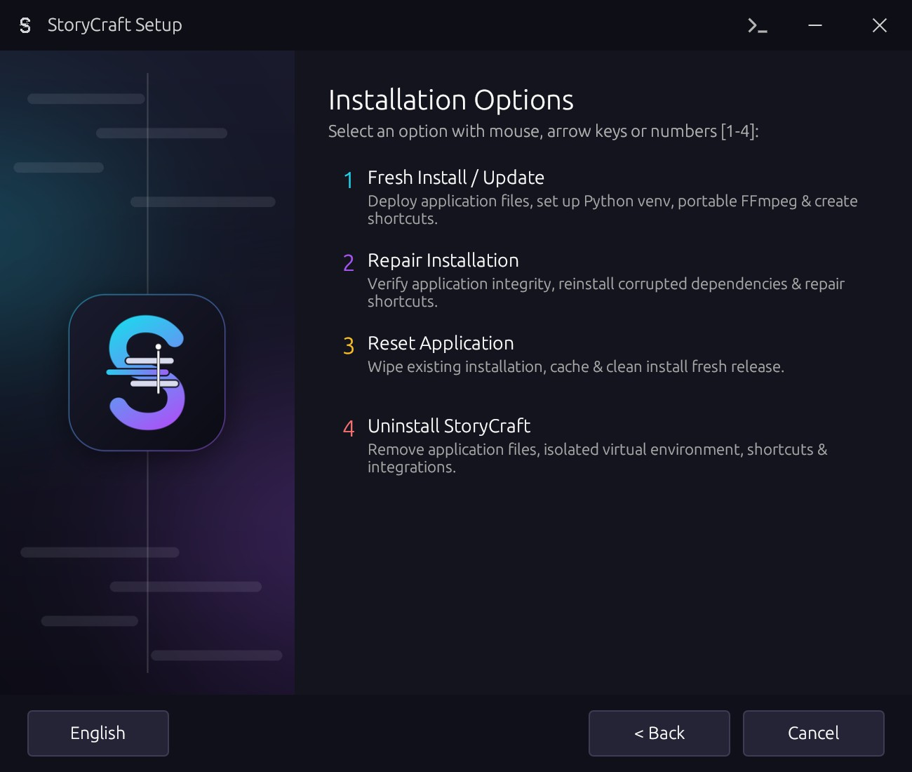

Errors
Fix a slip
A wrong year, a wrong name, a tangled phrase: type the right words and the patch says them. Left alone, it says the same words again without the stumble.
"We opened in 2012 2014, right after the fire."
For DaVinci Resolve · Free and open source
StoryCraft turns unscripted footage into text, cleans out what you'd cut anyway, and helps you (or your AI) arrange the moments that matter. Then it hands Resolve a finished timeline.
The best interviews have no script. They're also the slowest to edit: hours of footage, a few moments that matter, and a story hidden somewhere between them.
StoryCraft does the sorting so you can do the storytelling.
How it works
An example interview with a bicycle mechanic, from raw footage to a two-minute story. Click a step, or let it play.
Um, so I, I started fixing bikes in my garage.
A neighbour brought me a broken one. Broken one.
sound without words
It changed everything. You know? Changed everything.
Now kids come by after school to learn.
Um, so I, I started fixing bikes in my garage.
A neighbour brought me a broken one. Broken one.
sound without words · +15 dB
It changed everything. You know? Changed everything.
Now kids come by after school to learn.
Build a 2-minute story from this interview.
get_transcript 38 moments
check_edit 2:31 · clips 3 and 5 make the same point
check_edit 1:58 · the edit flows
apply_edit in the story
Opens in the garage, the first bike, what changed, the kids, and ends on why it matters.
Jump cut · cover with a punch-in or B-roll
Sent: 5 clips, 1:58 · 4 crossfades · 1 jump-cut marker · source timeline unchanged
The app
Screenshots of StoryCraft at 1920 × 1080, with an invented interview. Click a picture to see it full size.
Voice patch · with VoiceStudio
The best answer often has a wrong word, a cough in the middle or an ending that hangs once you cut it. Voice patch says those few words again in the speaker's own voice, puts each one where the original started, and blends it into the recording.
Errors
A wrong year, a wrong name, a tangled phrase: type the right words and the patch says them. Left alone, it says the same words again without the stumble.
"We opened in 2012 2014, right after the fire."
Noise
A cough, a passing truck, a mic bump right on the key word. StoryCraft lists passages that are hard to understand; the patch says them clearly, matched to the room's tone or clean.
"The first loaf [cough] sold out by nine."
Tone
Cut a sentence where the speaker kept talking and the last words still rise. StoryCraft finds those endings; the patch ends them as a finished sentence. Delivery sets the ending, pitch and pace.
"That's why we bake at night ↗ night ↘."
Synthetic speech: use it only with the speaker's permission, keep patches to a few words, and pick a model licensed for paid work (CosyVoice 3) for client projects. VoiceStudio is a free, separate app; StoryCraft talks to it on your computer. See the Voice patch screen →
What it does for you
"Um", "I think I think", a sentence started twice, the same line said again, a lone "yeah": found and cut, keeping the final, fuller version.
Every cough, knock or background voice is measured against the speaker. The loud ones go; you listen to the rest and keep or cut each one.
Blocks you drag, split and trim, with a target length and a clarity score. Every page plays the story the way Resolve will get it, with one playhead and one clock. Play original when you want the raw recording.
Voice patch, with VoiceStudio on your computer: a wrong word, a word lost under noise or an ending that hangs, said again in the speaker's voice and blended in. Only with the speaker's permission. More →
Review cuts plays each join as recorded and as the story plays it, up to 3× faster with the voice at its normal pitch. Tick the ones that sound good; Resolve only gets a timeline when you're happy.
Keep the story as a named version, compare any version with the story now and restore it. Start fresh with a timeline at any time: the earlier work goes to an archive.
Cut points land on the quietest moment, never inside a word, and never one word before a sentence ends. Pauses stay even.
A new timeline in a StoryCraft bin, with crossfades on every join and markers where the picture jumps or a sound needs a listen.
Keep Resolve in sync rebuilds the timeline a few seconds after each change. Edited it by hand in Resolve? Reload from Resolve brings it back as a version you can compare.
Up to 10 voices told apart on your computer, even when someone cuts in mid-sentence. Click a name to give a turn to someone else, or reassign everything a voice said.
One switch cuts everything a speaker says from the edit. Or keep them, and the AI knows who asked and who answered.
Two or more cameras? Each turn shows its speaker's camera, or Resolve Studio's SmartSwitch picks the angle of a multicam clip.
An SRT file or Resolve subtitles of the edit, Voice Isolation on the dialogue, and swear words bleeped while the picture stays.
Each edit of an interview is listed by date or length, ready to reload, and reopens by itself when Resolve starts on it. Copies go to Premiere, Final Cut or OTIO, and the source timeline is backed up.
Paste a script or an outline and the story board pulls the lines that match, in that order. When a line was said twice, the later take wins.
Bring your own AI
StoryCraft doesn't need an account or a subscription. It prepares the interview for an AI, then checks the answer before anything reaches your story board.
External AI
Built-in MCP server
Ask Claude Desktop or Claude Code for "a 2-minute story from this interview". It reads, checks and fixes its own edit, then puts it on your story board, and sends it to Resolve if you ask. Your Claude app asks before each step.
How it compares
Other good tools edit interviews too. Here is what each does for an unscripted interview, from their public pages and reviews.
| Tool | Cost | In Resolve | Cuts fillers | Speakers | Captions | Cameras | AI story | Voice fix |
|---|---|---|---|---|---|---|---|---|
| StoryCraft | Free | ✓ | ✓ | ✓ | ✓ | ✓ | ✓ | ✓ |
| DaVinci Resolve Studio 21 | Free / $295 | ✓ | ◐ | ✓ | ✓ | ✓ | ◐ | ◐ |
| Adobe Premiere Pro | Subscription | — | ✓ | ✓ | ✓ | ◐ | ? | — |
| Descript | Subscription | — | ✓ | ✓ | ✓ | ? | ✓ | ✓ |
| Eddie AI | Credits | ◐ | ? | ✓ | ✓ | ✓ | ✓ | ? |
| AutoCut | Subscription | ✓ | ✓ | ◐ | ✓ | ✓ | ? | — |
✓ yes ◐ partly — no ? not confirmed. Hover or tap a mark for details. Checked November 2026; prices and features change. Something wrong or out of date? Tell me and I'll fix it.
Install
Paste the command into a terminal, or download StoryCraft Setup and follow its steps. Both put StoryCraft in its own folder, add it to Resolve's Workspace → Scripts menu, and can update, repair or uninstall it later.
curl -fsSL "https://raw.githubusercontent.com/Boris-Edu/StoryCraft/fork/setupfiles/mac-setup.sh" | bashirm "https://raw.githubusercontent.com/Boris-Edu/StoryCraft/fork/setupfiles/windows-setup.ps1" | iexcurl -fsSL "https://raw.githubusercontent.com/Boris-Edu/StoryCraft/fork/setupfiles/linux-setup.sh" | bashDownload StoryCraft Setup for macOSUnzip and open it. The first time, macOS can't check the app: go to System Settings → Privacy & Security → Open Anyway.
Download StoryCraft Setup for WindowsIf SmartScreen stops it: More info → Run anyway.
Download StoryCraft Setup for LinuxMake it executable (chmod +x storycraft-setup-linux), then run it.

Get in touch
StoryCraft is a personal project, and it gets better with every message. Found a bug, hit a problem, have an idea or a comment? Tell me. And if you edit interviews, make documentaries or just like the idea, I'd be glad to connect.
Or write directly to boris@dessimond.com. Prefer GitHub? Open an issue.
Built on BadWords
StoryCraft is a fork of BadWords, which Szymon Wolarz built as a solo developer and shared under the MIT licence. The transcription, the Resolve connection and the timeline assembly all started there. If StoryCraft saves you time, please support him directly.